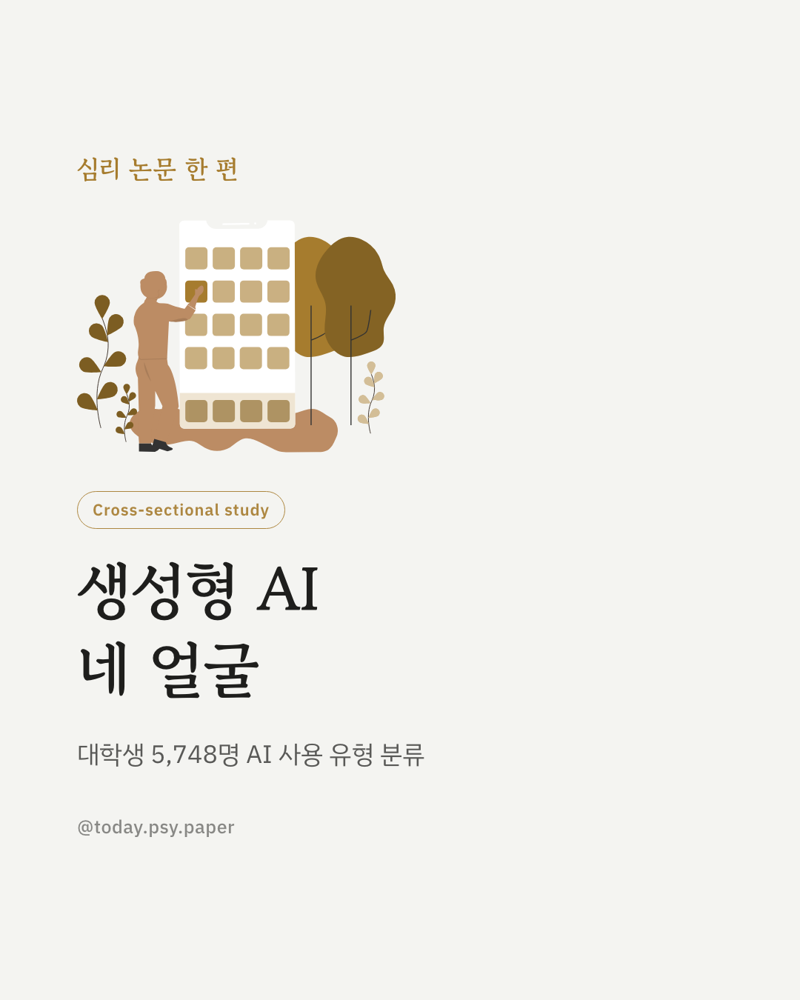
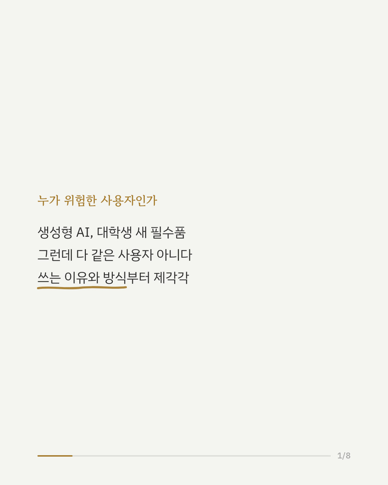
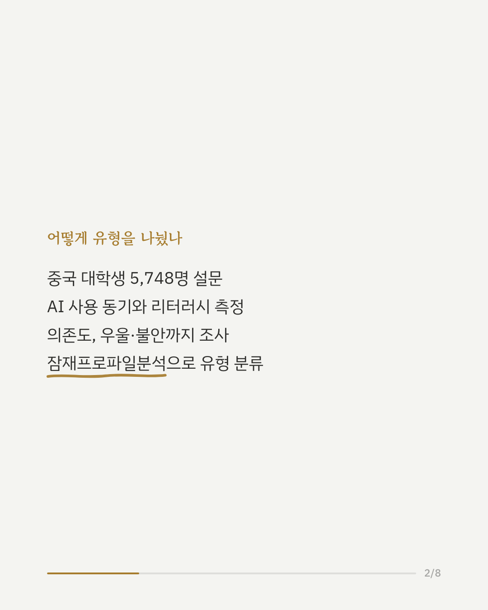
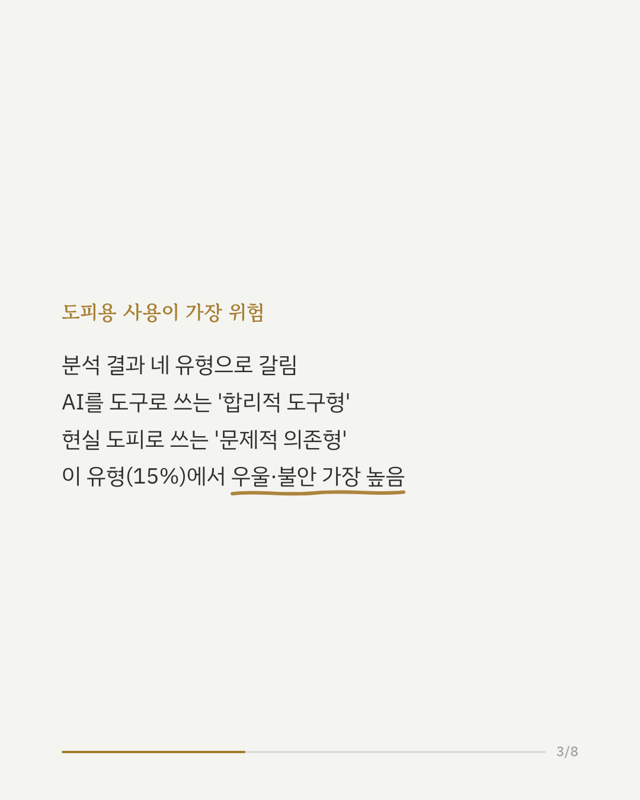
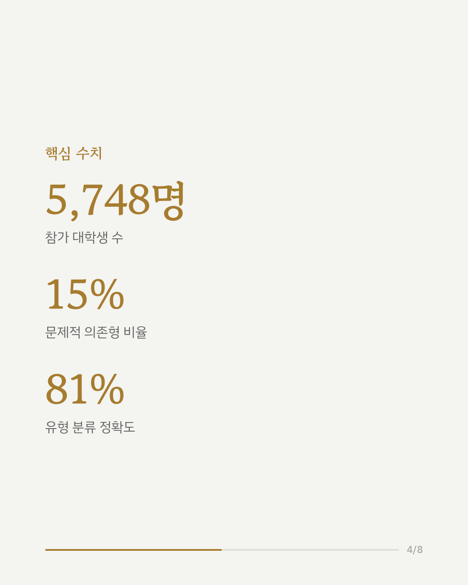
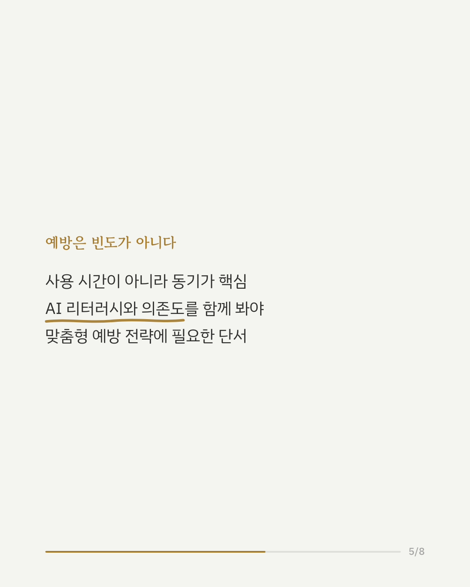
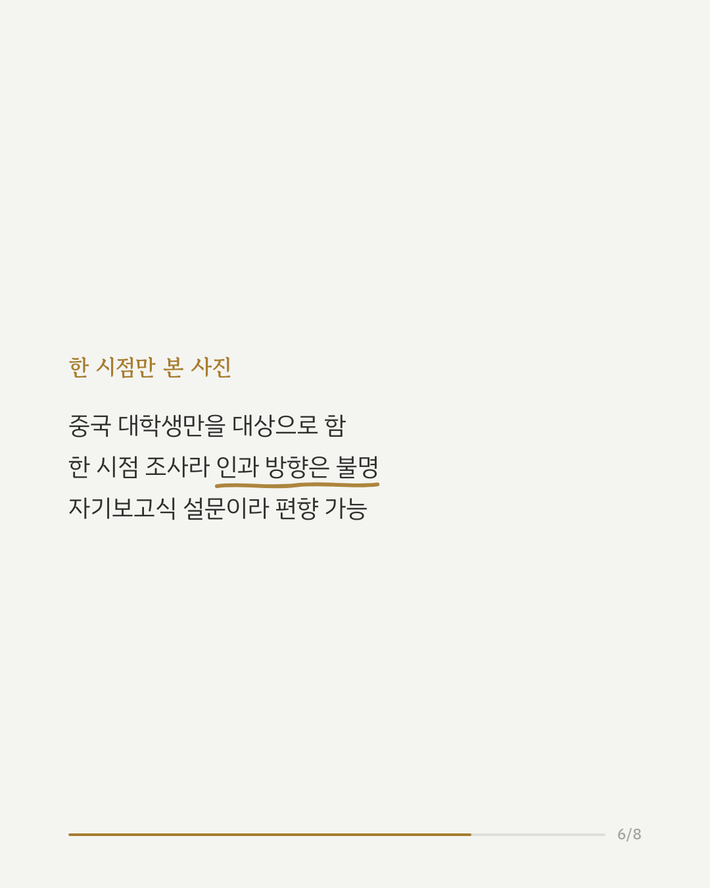
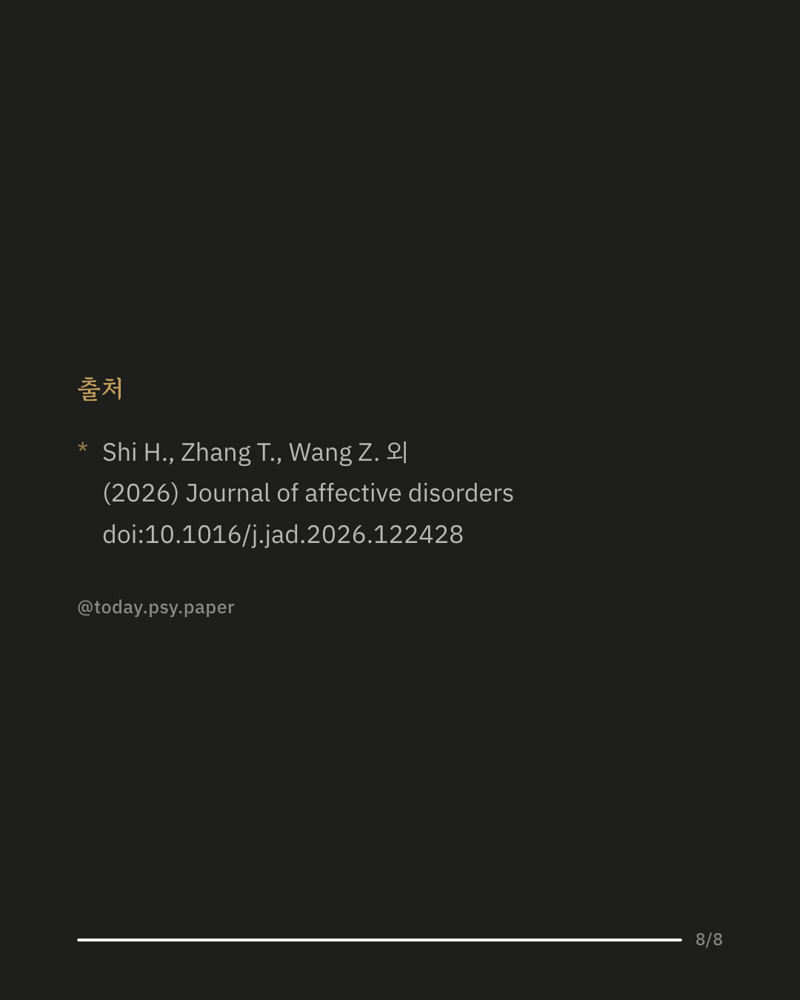

생성형 AI를 쓰는 대학생이라고 다 같지 않습니다. 최근 연구는 중국 대학생 5,748명을 대상으로 AI 사용 방식을 살펴봤는데, 사용 빈도가 아니라 '왜, 어떻게' 쓰는지에 따라 우울과 불안 수준이 크게 갈렸습니다. 분석 결과 사용자는 네 유형으로 나뉘었습니다. AI 리터러시가 높고 도구적으로 활용하는 '합리적 도구형'이 가장 안정적인 결과를 보인 반면, 현실 도피 동기가 강하고 AI 의존도가 높은 '문제적 의존형'(전체의 15%)은 우울과 불안이 가장 높았습니다. 이 유형은 스마트폰 중독, 실행기능 어려움과도 관련이 있었습니다. 연구팀은 AI를 단순히 얼마나 자주 쓰는지가 아니라, 사용 동기와 리터러시, 의존도를 중심으로 봐야 한다고 제안합니다. 다만 이 연구는 중국 대학생만을 한 시점에서 조사한 결과라, 다른 집단에도 그대로 적용되는지와 인과 방향은 확실하지 않습니다. 출처: Journal of Affective Disorders (2026), 'Latent profiles of generative artificial intelligence use among Chinese college students: Associations with depression and anxiety' #임상심리 #정신건강정보 #대학생심리 #디지털의존 #심리학연구
python3 publish.py 42660392